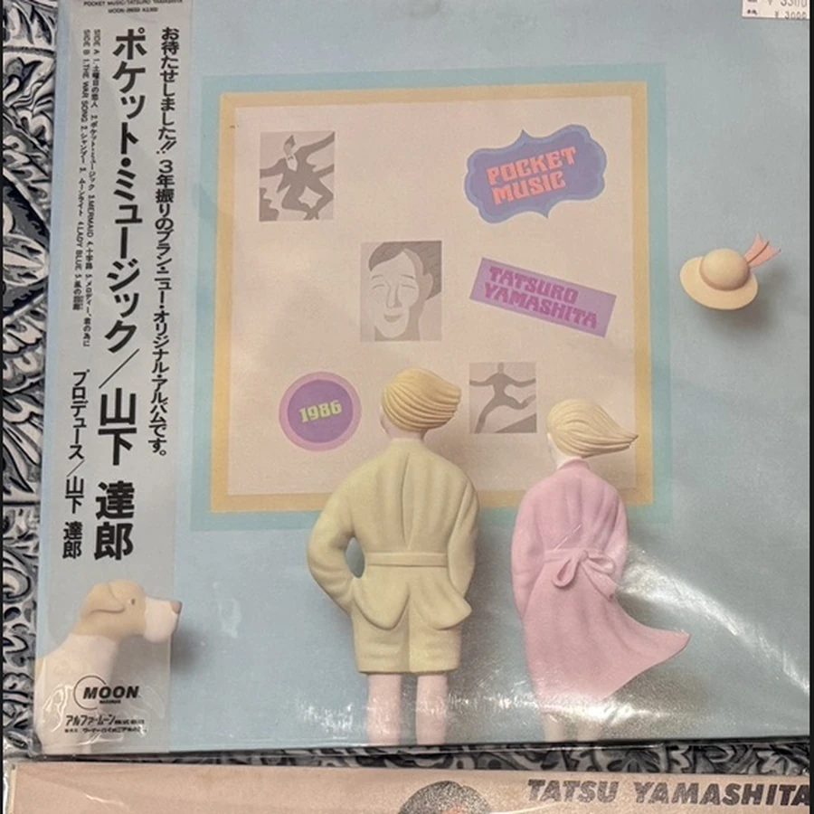
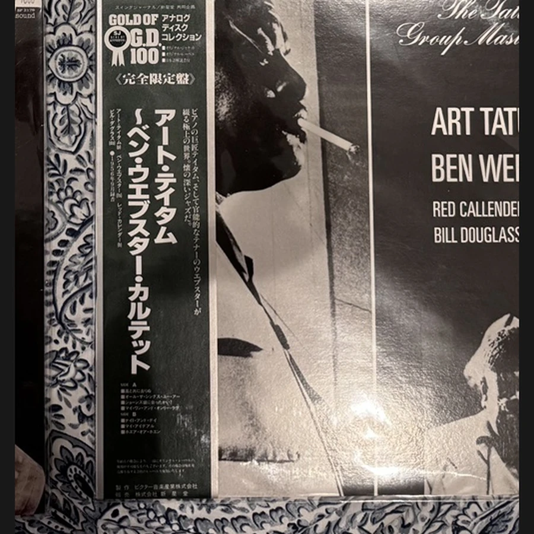
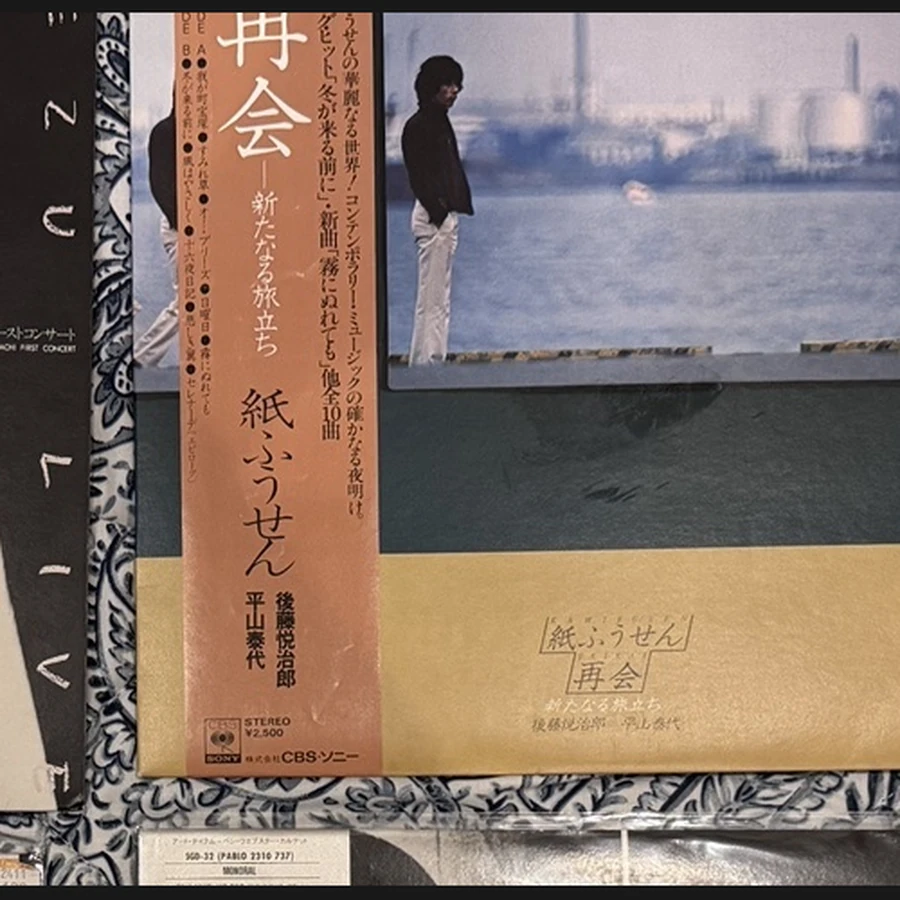
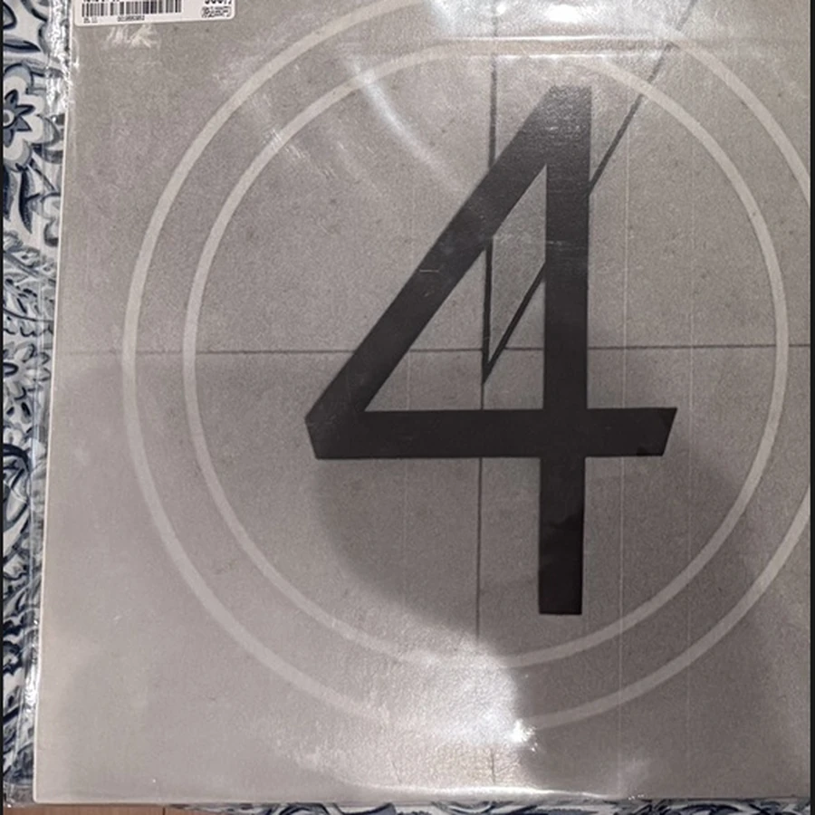
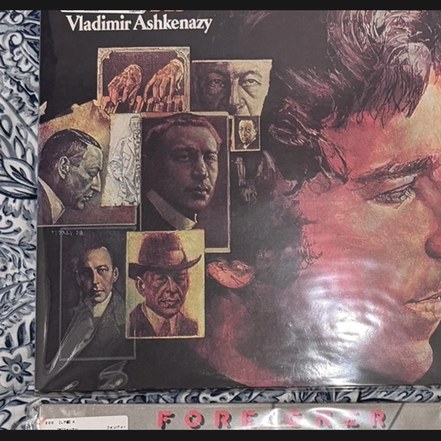
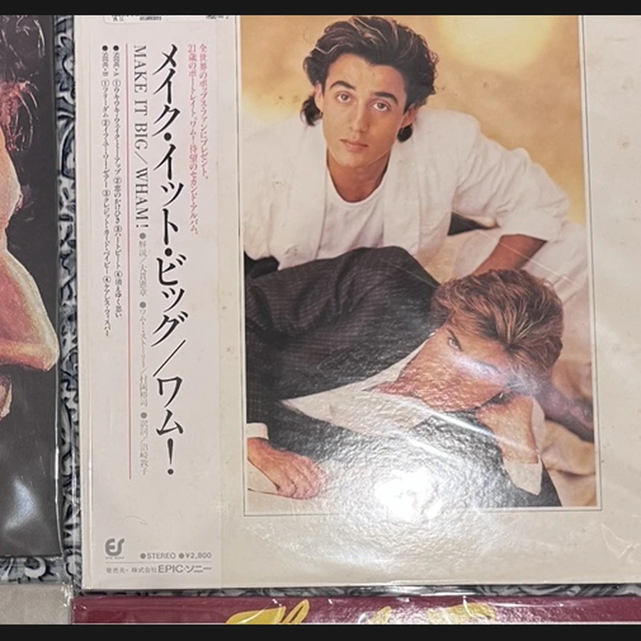
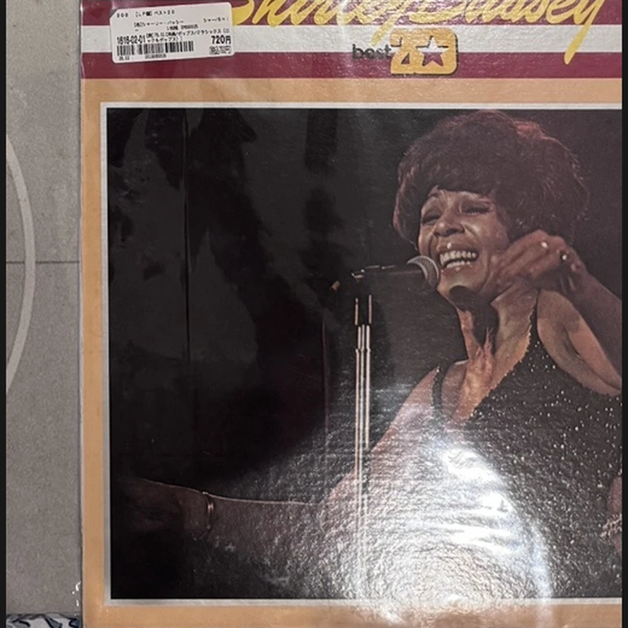
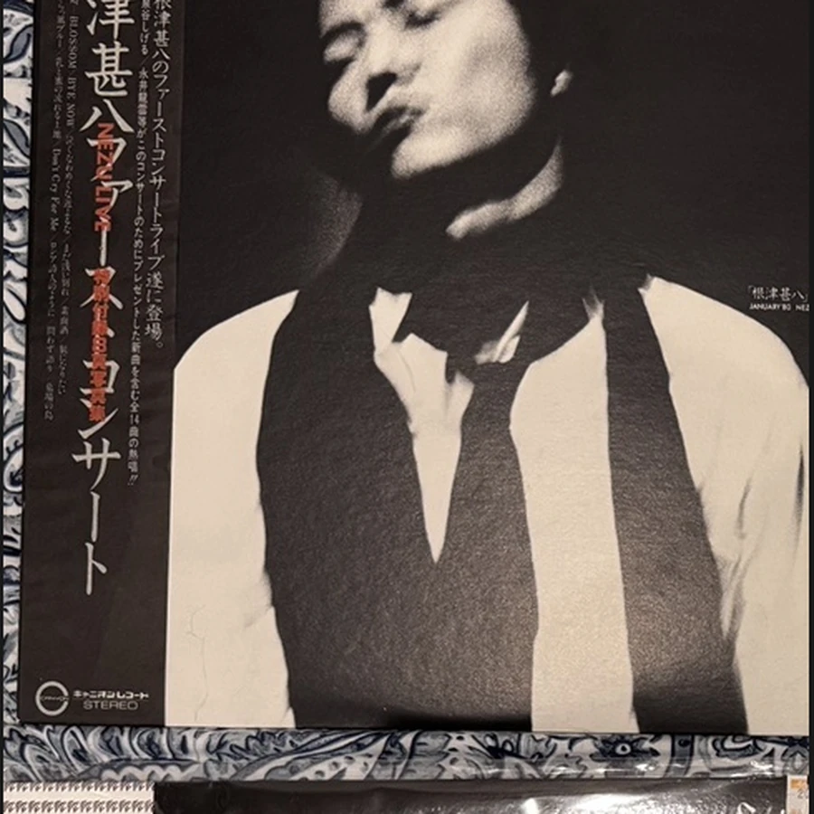
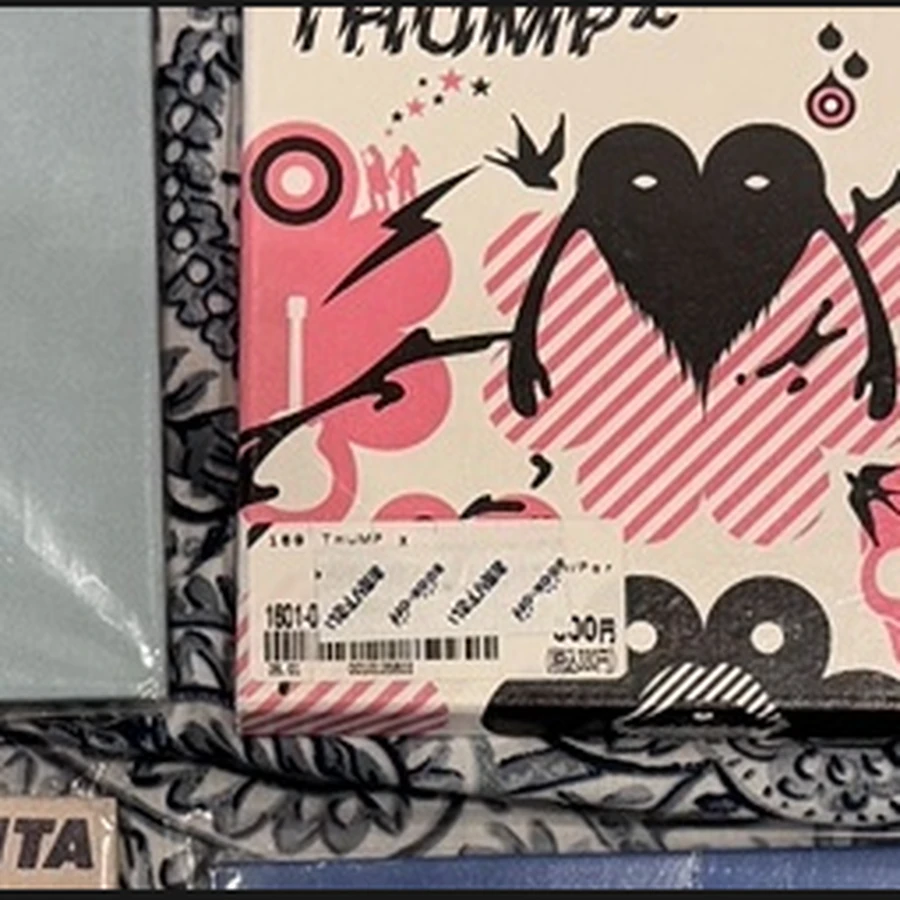

Vinyl · 1986
Tatsuro Yamashita
POCKET MUSIC
The music collection, organised by format: vinyl, CD and digital releases.

POCKET MUSIC

The Tatum Group Masterpieces, Vol. 8

再会 -新たなる旅立ち-

4

Rachmaninov: Preludes

Make It Big

Best 20

ファースト・コンサート

FOR YOU

RIDE ON TIME

Starboy

招待状のないショー

Stay With Me

Plastic Love

Fly-Day Chinatown

The Final Sessions Vol. 1

Passage

BEST ALBUM 青春のかけら達

こんにちは

Serenade

Live at Whisky A Go Go

Mr. Black Chanels

Talk You All Tight

The Gods We Can Touch

THUMPχ

Death Stranding: Songs from the Video Game

Opr

Rarities

Vessel

ADHD 4

ADHD 7

A Different Kind of Human (Step 2)

All My Demons Greeting Me as a Friend